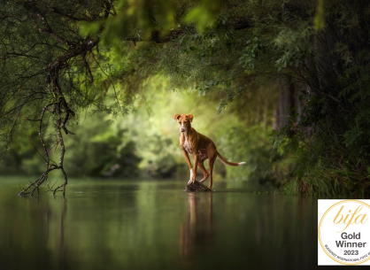

Pet Photographer of the year 2019

Kategorie „Rescued Dogs“ 2019
Hundeführer trainieren einen körperlich und äußerlich vorbereiteten Hund für Ausstellungen. Sie bringen ihr bei, sich richtig zu bewegen, eine für den Betrachter günstige Haltung einzunehmen, ihre Stärken hervorzuheben, ihre Schwächen zu verbergen und ihre Arbeitsqualitäten zu demonstrieren. Zusammen mit ausgebildeten Ohrenschülern laufen diese Spezialisten um den Ring und versuchen, bei verschiedenen Meisterschaften erste Plätze zu erringen.
Kategorie „Rescued Dogs“ 2019
OVERALL WINNER 2019
Kategorie „Rescued Dogs“ 2019